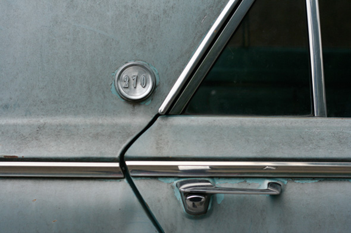

The votes are in. Lauren Hunt’s photo 9 and Dean Olufson’s photo 8 each received ten votes, more than any other individual pictures. Dean ran the contest and wasn’t eligible to win, so Lauren took the prize. You can see every vote in the table. View the complete 2009 vote tally →
URBAN PHOTO SAFARI / 2009
2009 Vote Tally
